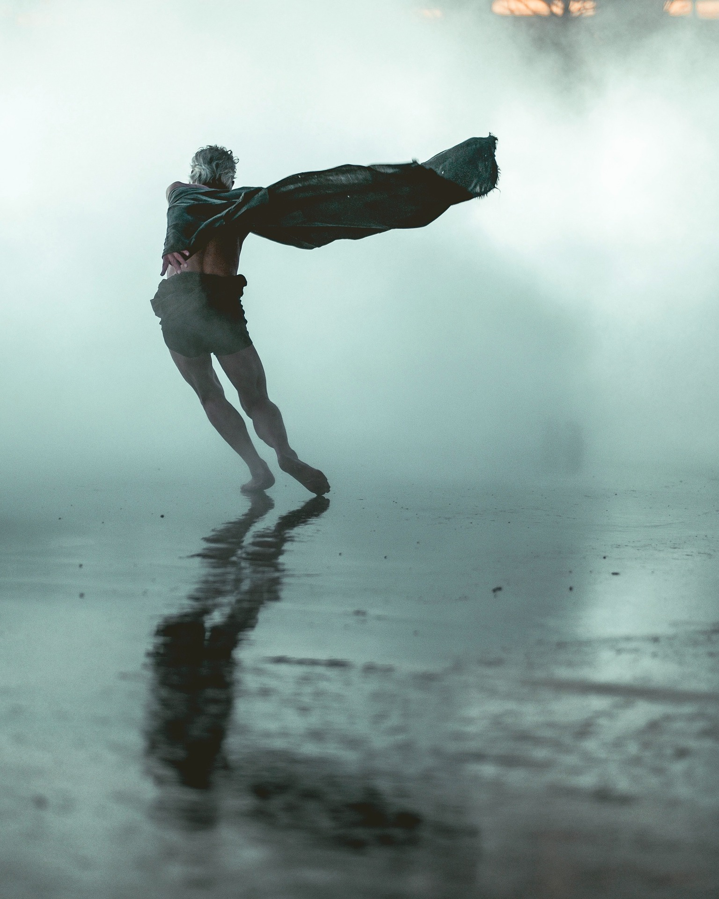

Our Story
At Rainy Days, we believe rain shouldn’t stop your day—it should be part of it. The idea for Rainy Days was born on a wet afternoon when we realized most raincoats were designed to endure the rain, not enjoy it. They were bulky, boring, or uncomfortable. We wanted something better: raincoats that feel good to wear, look great wherever you go, and actually make you look forward to cloudy skies. So we set out to create rainwear that blends thoughtful design, dependable protection, and everyday style. Every Rainy Days coat is made with high-quality, waterproof materials, carefully tested for comfort and durability, and designed to move with you—whether you’re commuting to work, walking the dog, traveling, or dancing through puddles just because you can. We’re inspired by real life and real weather. By quiet drizzles, sudden downpours, and the simple joy of staying dry without sacrificing who you are. Our designs are clean, versatile, and made to last beyond a single season. Because rain happens—but with Rainy Days, it doesn’t have to ruin your plans. Welcome to Rainy Days. Let it rain. ☔